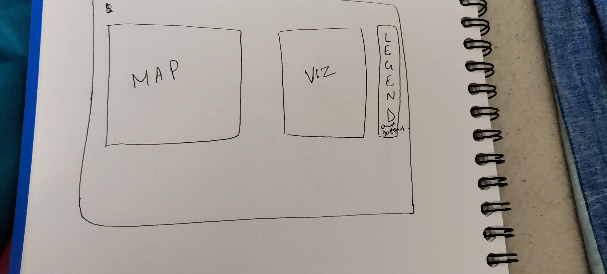
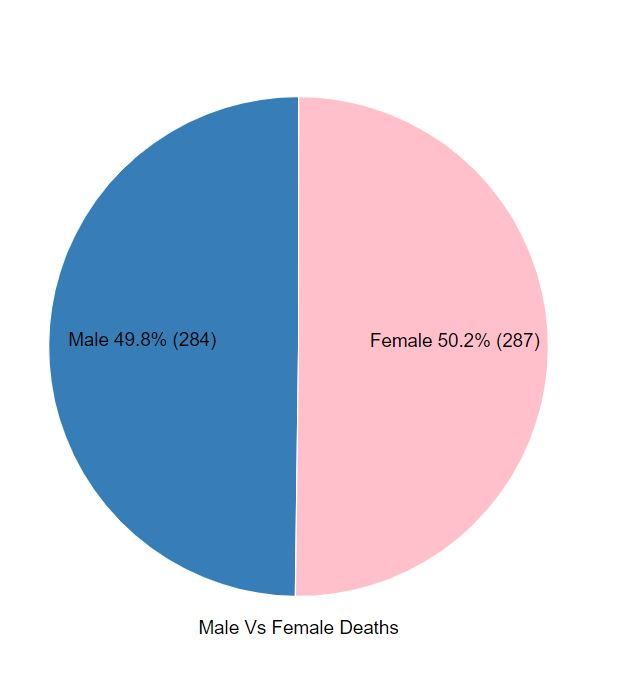
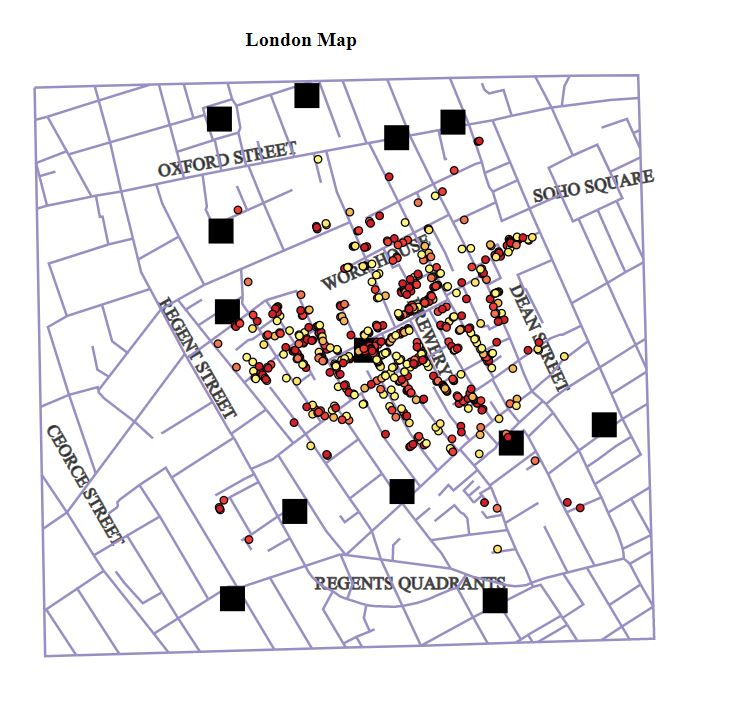
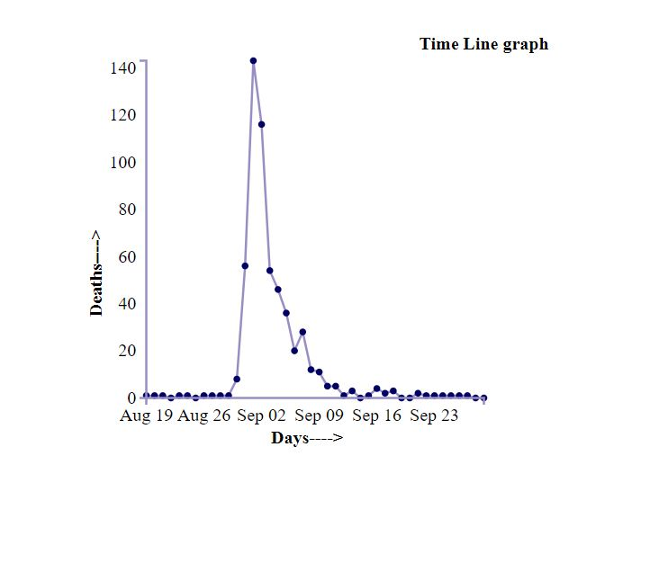
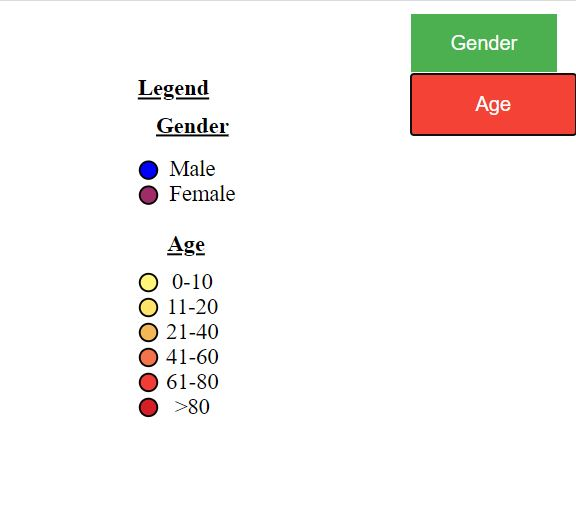
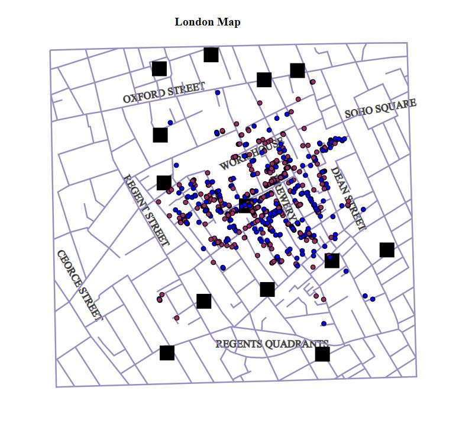

Design Documentation
Design Process:
After checking all the requirements for the project, I pinned some features and made a rough map of the design
- Firstly, I thought of making 2 vizualizations. One animated and one static.
- Secondly, I wanted to link the map to a graph which shows the death days.
Some of my rough sketches are

Design Choices:
- For the vizualizations,deaths_age_sex.csv was extracted into two .csv files. One Age.csv, which shows us the deaths based on respective age groups and the other Sex.csv, which shows us the deaths based on the respective genders.
- I created a Pie chart to display the deaths based on gender. I selected the color blue for Males and Pink for females. I inserted the percentage as well as the number in the vizualization.

- I created an animated bar chart to display the deaths based on different age groups. I chose the "black" color for the bars, which will turn red when you hover on it. It will also display the number of deaths on top of each bar for the respective age groups.
- I created a map of the Soho neighbourhood and added places like workhouse, brewery, soho square etc. I added few streets as well such as oxford street, regent street, ceorce street etc.

- I created a timeline graph showing the deaths on each day. I have linked the timeline graph and the map. When we click any dot on the graph, the location where deaths happened starts accumulating on the map. The categorization is by Age

- I have created Legend showing the color assigned to each Gender or Age. I have created two buttons as well one for gender which when clicked, populates the map with deaths categorized by Gender and the same with Age.


- Applied zoom in/out feature on the map. The user can click or perform the zoom gesture to zoom
Discovered Facts:
- We can see that most of the deaths are for the age groups, 0-10 and >80. This can be because the young and the very old people have a low immunity and was not able to survive the epidemic.
- We can see most of the deaths are around the pump between the workhouse and the brewery
- The deaths are mostly in the center of the map and not around the other pumps in the top and south side of the city, which suggests that the contaminated water was near the brewery and workhouse area.
- It can be possible that the people around the oxford street uses their own water bottles and got saved from the epidemic
References:
- https://stackoverflow.com/questions/46714759/append-circle-to-map-in-d3
- https://d3js.org/
- https://www.tutorialspoint.com/d3js/index.htm
- https://www.youtube.com/watch?v=2LhoCfjm8R4
- https://www.demo2s.com/javascript/javascript-d3-js-circular-picture.html